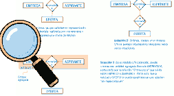

L'agregació és una abstracció a través de la qual les relacions es tracten com a entitats, utilitzant-se per a expressar relacions entre relacions o entre entitats i relacions.
Suposem un exemple en el qual hem de modelar la següent situació: una empresa de selecció de personal realitza entrevistes a diferents aspirants. Pot ser que, d'algunes d'aquestes entrevistes a aspirants, es derive una oferta d'ocupació, o no. En el següent gràfic es representen tres solucions, les dues primeres errònies i una tercera correcta, utilitzant una agregació.
Com has pogut observar, la representació gràfica d'una agregació es caracteritza per englobar amb un rectangle les entitats i relació a abstraure. D'aquesta manera, es crea una nova entitat agregada que pot participar en altres relacions amb altres entitats. En aquesta mena de relació especial d'agregació, la cardinalitat màxima i mínima de l'entitat agregada sempre serà (1,1) no indicant-se per això en l'esquema.
La seua aparició està motivada pels següents objectius:
- Rebaixar el grau d'una interrelació existent. Les relaciones n-àries (sobretot les n >= 4) són difícils de manejar. Es pot rebaixar el grau de totes les nostres interrelacions n-àries (n >= 3) i deixar-les totes com a binàries.
- Impedir que el grau d'una interrelació augmente. A mesures que realitzes un model E-R, poden "aparéixer" noves entitats que s'interrelacionen amb les existents i podrien augmentar el grau de la interrelació, fent-la incomprensible. Mitjançant l'ús d'Entitats Associatives, mantenim el grau "a ratlla".